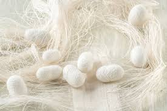
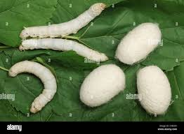
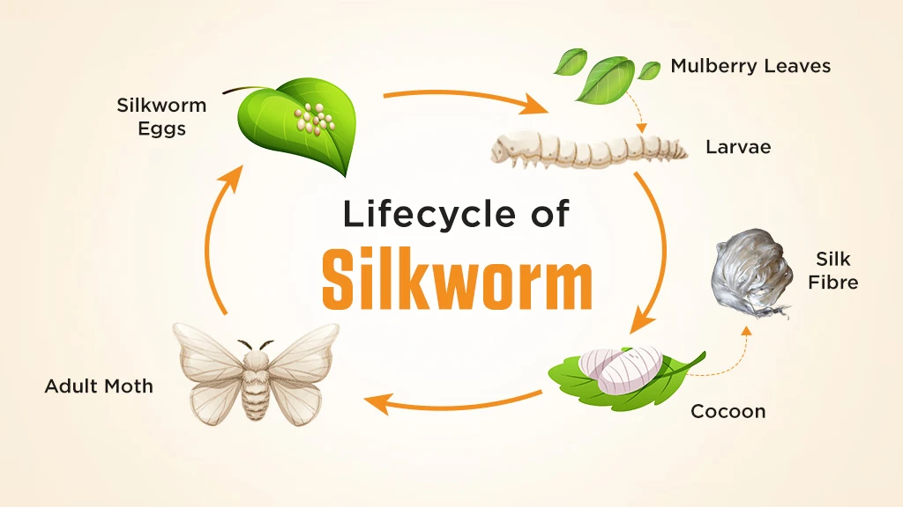
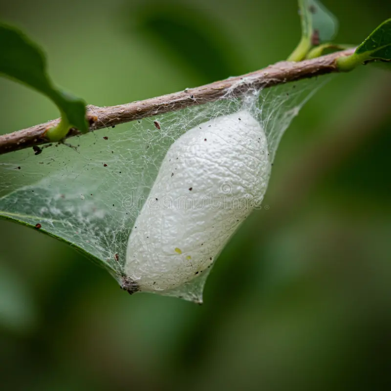

"The silkworm dies only when its silk is exhausted."
— Chinese Proverb
01 — Production
Cocoon & Silk




Silk is a natural protein fibre produced by silkworms — most commonly Bombyx mori — to create a protective cocoon. Over 2–3 days, a single larva spins a continuous filament up to 1,000 metres long, consisting of fibroin for structure and sericin as a natural glue binding the thread together.
The production process begins with larvae feeding on mulberry leaves before spinning a white-yellow cocoon. The larva then transforms into a pupa inside the cocoon, which provides a protected, warm environment for this critical phase. To harvest silk, cocoons are placed in hot water or steam to soften the sericin — a process called degumming — allowing the single unbroken filament to be carefully unravelled and reeled onto spools.
In conventional harvesting, pupae are killed during processing to keep the filament intact. However, in "Ahimsa" or peace silk, the cocoons are used only after the moth has naturally emerged. Silk is a remarkably strong natural fibre — its protein composition of 70–80% fibroin and 20–30% sericin gives it tensile properties comparable to nylon. Beyond luxury textiles, silk has long been used in medical applications to stitch wounds and repair tendons owing to its strength and biocompatibility.
02 — Biology
Life Cycle
The life cycle of a silkworm (Bombyx mori) consists of four main stages — egg, larva, pupa, and adult moth — typically completed in 45–55 days. Each stage is distinct and precisely timed, shaped by thousands of years of domestication alongside human sericulture.
The cycle begins with the egg stage, lasting 10–14 days. A female moth lays up to 350–500 eggs, often deposited on mulberry leaves. These eggs remain dormant until hatching in warm conditions. The larval stage follows over 20–30 days: hatched caterpillars consume large quantities of mulberry leaves, growing rapidly and moulting four times. During the cocoon stage (10–14 days), the larva spins a protective cocoon from a single continuous silk thread up to 900 metres long, secreted from its salivary glands.
Inside the cocoon, the larva matures into a pupa, transforming from a pale yellow-white creature into a brown pupa. Finally, the adult moth emerges using specialised enzymes to dissolve a small opening. Adults are flightless, do not eat, and live only 3–4 days — just long enough to mate and lay eggs, restarting the entire cycle once more.
03 — Industry
Sericulture
Sericulture, or silk farming, is the agro-based industry of rearing silkworms for raw silk production. It encompasses mulberry cultivation, caterpillar rearing, and the reeling of cocoons to extract silk fibres. It is a highly labour-intensive yet eco-friendly rural enterprise that offers high returns on relatively low investment.
The full process involves cultivating mulberry trees, rearing silkworms on their leaves for 4–6 weeks, harvesting cocoons, and reeling — the careful unwinding of the silk filament. Four main types of commercial silk are produced: Mulberry, Eri, Tasar, and Muga, each sourced from a different species of silkworm and with distinct texture, lustre, and properties.
China is the world's leading silk producer, followed closely by India. In India, sericulture provides income for millions of people in rural areas, with key production centres in Karnataka, Andhra Pradesh, Tamil Nadu, and Jammu & Kashmir. The industry represents one of the rare intersections of ancient craft and modern agro-industry, supporting livelihoods and cultural heritage simultaneously.